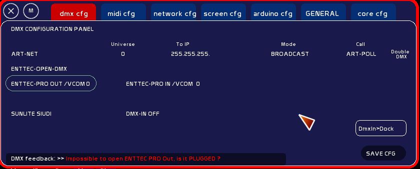
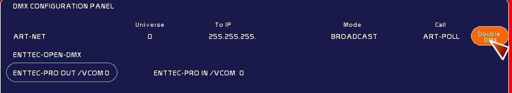
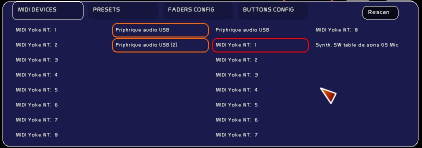
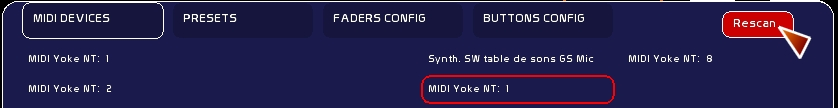

Ce cas de figure peut arriver en jeu, pour cause de câble USB fatigué ou mal branché, ou une erreur humaine.
Contrairement à Schwartzpeter, vous pouvez débrancher / rebrancher à chaud votre hardware sans crash pour WhiteCat.
Vous n'avez pas besoin de redémarrer le chat blanc pour réinitialiser la connexion.

Si vous utilisez la double sortie ( enttec + art net) pour piloter de la vidéo:

Si celà ne fonctionne pas ( toujours pas de LED verte):
Parfois avec windows, la connexion midi peut sauter, ce problème est généralement apparent sur les machines non mises à jour. Et disparait après mise à jour. Cepedant une fatigue des ports USB peut provoquer aussi une déconnexion.
Lorsque vous bougez vos controles midi, rien ne change dans le retour d'information, pas d'info type Chan: 0 Pitch: 56 Vel 127
Si celà se produit en jeu, pas de panique !
Les ports midi à gauche ( en orange) sont les entrées midi ( signal ext vers WhiteCat), les ports à droite en rouge sont les sorties midi ( WhiteCat vers interface midi).


Si celà ne fonctionne toujours pas: